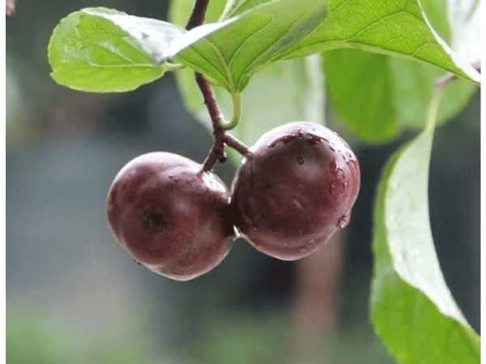

Eugenia reinwardtiana
Common Names: Jamaica Cherry, Panama Berry, Singapore Cherry, Cotton Candy Berry, Strawberry Tree
Local Name: Thaen Pazham (Tamil), Nakkaraegu (Telugu)
Family: Myrtaceae
Origin: Southern Mexico, Central America, Caribbean, tropical South America
Plant Type: Fast-growing perennial evergreen tree
Variety: Manila Tennis Ball — selected large-fruited cultivar
Average Lifespan: 15–30 years
| Growth Habit | Extremely fast-growing spreading tree with horizontal branching; one of the fastest tropical fruit trees |
| Plant Size | 7–12 meters tall; wide spreading canopy up to 10 meters |
| Leaves | Alternate, simple, oblong-lanceolate, 5–15 cm long, serrated margins, sticky-hairy beneath; dark green above |
| Flowers | White, 5-petaled, 1.5–2 cm across, with numerous yellow stamens; borne in clusters of 1–3 in leaf axils |
| Flower Characteristics | Flowers open before dawn and drop by afternoon; produced continuously year-round in tropics |
| Fruit | Round berry, 1–1.5 cm diameter (Tennis Ball variety up to 2 cm); thin smooth skin, soft sweet pulp with tiny seeds |
| Fruit Color | Green turning bright red when ripe |
| Seed Characteristics | Numerous tiny yellow seeds embedded in sweet pulp; easily dispersed by birds and bats |
| Root System | Extensive lateral root system; adaptable to poor soils; pioneer species |
| Climate | Tropical to warm subtropical; frost-sensitive |
| Temperature Range | 22–35°C ideal; does not tolerate frost |
| Rainfall Requirement | 500–2500 mm annually; very drought-tolerant once established |
| Soil Type | Extremely adaptable; grows in poor, sandy, limestone, or even alkaline soils |
| Soil pH Preference | 5.5–8.0 (very tolerant) |
| Sun Requirement | Full sun preferred; tolerates partial shade |
| Spacing | 5–8 meters between trees (wide canopy) |
| Irrigation Method | Minimal irrigation needed; very drought-hardy |
| Water Requirement | Low; thrives with minimal water once established |
| Can it Grow in Pots? | Yes, in large pots (30+ liters); will remain smaller but still fruits well |
| Fertilizer Schedule | Minimal fertilization needed; once or twice per year is sufficient |
| Recommended Organic Fertilizers | Compost, aged manure; tree thrives even without fertilization |
| Pesticide Frequency | Rarely needed; very few pest problems |
| Recommended Organic Pesticides | Neem oil if needed; fruit fly traps during heavy fruiting |
| Mulching Practice | Optional; tree is self-mulching with leaf drop |
| Training System | Natural spreading form; can be pruned to control size |
| Pruning Time | Any time; prune to control spread and height |
| How to Prune | Remove lower branches for clearance; thin canopy for light penetration; responds well to hard pruning |
| Common Pests | Fruit flies, birds, bats (minor); whiteflies occasionally |
| Common Diseases | Very disease-resistant; occasional root rot in waterlogged conditions |
| Disease Prevention & Remedies | Ensure good drainage; virtually maintenance-free |
| Flowering Months | Year-round in tropical climates; continuous flowering and fruiting |
| Fruiting Season | Year-round; fruits ripen within weeks of flowering |
| Days to Harvest | 30–45 days from flowering; seedlings fruit within 18–24 months |
| Harvest Indicators | Fruit turns bright red and softens; sweet cotton-candy aroma; falls easily |
| Average Yield per Plant | Prolific; thousands of small fruits per season |
| Pollination Type | Self-fertile; insect-pollinated |
| Pollination Notes | Bees, butterflies, and small insects pollinate; flowers open early morning |
| Pollination Details | Self-fertile; flowers attract diverse pollinators at dawn |
| Propagation by Seeds | Very easy; seeds germinate in 2–4 weeks; fruit within 18–24 months from seed |
| Propagation by Cuttings | Stem cuttings root easily in 3–4 weeks; air layering also successful |
| Propagation by Grafting | Not commonly grafted; seedlings grow so fast that grafting is unnecessary |
| Water Usage | Very low; one of the most drought-tolerant tropical fruit trees |
| Soil Conservation Practices | Pioneer species; excellent for reforestation and degraded land rehabilitation |
| Organic Practices Used | Requires virtually no chemical inputs; ideal for organic systems |
| Companion Plants | Shade-tolerant crops beneath canopy; nitrogen-fixing ground covers |
| Biodiversity Benefits | Major food source for birds, bats, and insects; excellent shade tree; supports urban biodiversity |
| Commercial Production Regions | Philippines, Indonesia, Malaysia, India, Central America, Caribbean |
| Market Uses | Fresh fruit (street markets), shade tree, firewood, fibre |
| Processing Uses | Jams, juice, wine; bark fibre for rope; wood for light construction |
| Market Value (Approx.) | ₹50–150 per kg (local markets); primarily a subsistence fruit |
| Symbolism | Symbol of resilience and generosity in tropical cultures; freely available street tree fruit |
| Traditional Uses | Bark and leaf tea used for headache and fever in Central American folk medicine; flowers used as antiseptic |
| Calories | 38 kcal per 100g |
| Dietary Fiber | 4.6 g per 100g |
| Vitamin C | 80 mg per 100g |
| Vitamin A | 15 IU per 100g |
| Iron | 1.2 mg per 100g |
| Potassium | 124 mg per 100g |
| Antioxidants | Flavonoids, phenolic acids, ascorbic acid |
| Other Key Nutrients | Calcium, phosphorus, protein, niacin |
| Anxiety & Sleep | Leaf tea traditionally used as mild sedative and relaxant |
| Immune Support | High vitamin C content supports immune function |
| Anti-inflammatory Properties | Leaf and bark extracts show anti-inflammatory and analgesic properties |
| Heart Health | Flavonoids may support cardiovascular health |
| Digestive Health | Flower tea used for stomach cramps and digestive issues in folk medicine |
Disclaimer: Information provided is for educational purposes only and not a substitute for medical advice.
Add your field observations here.